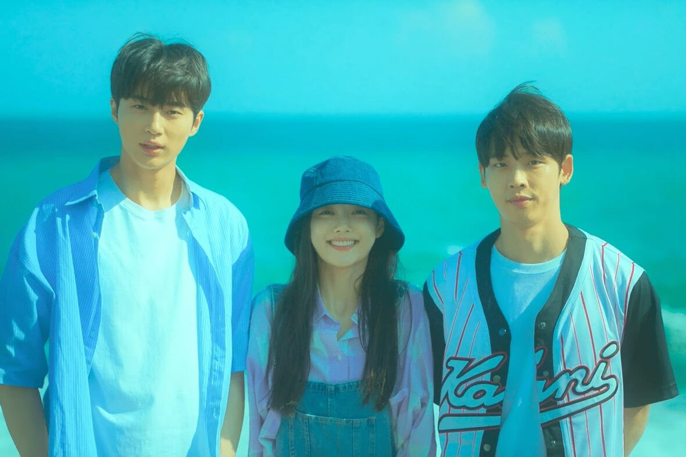

☆Gênero: Drama/ Romance/ Melodrama
☆lançamento: 06/10/2022
☆diretor(a): Bang Woo-ri
☆Onde assistir? Netflix
☆classificação indicativa: +10
☆Duração: 1h 59mn
avaliação:★★★★☆(3,9)
Sinopse
Em 1999, uma adolescente monitora atentamente o garoto pelo qual a melhor amiga está apaixonada. Tudo vai bem até que um outro amor começa a dar as caras.